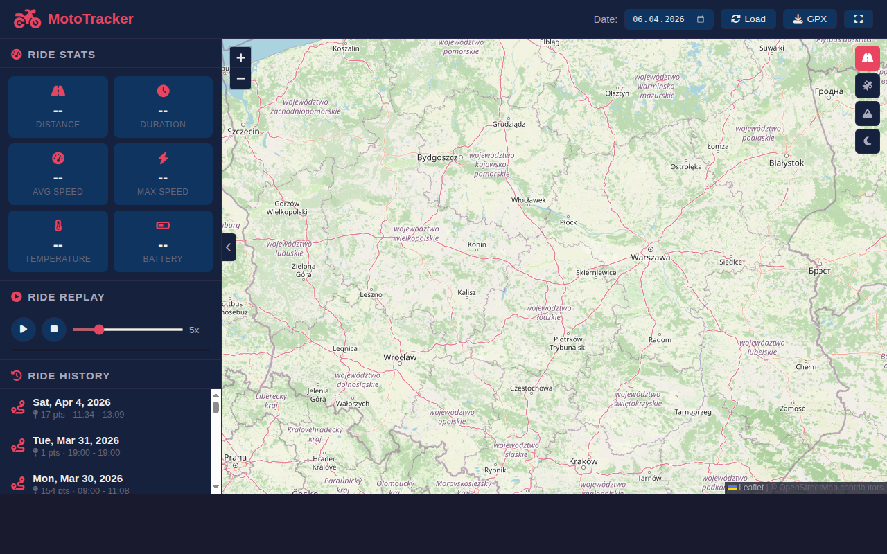
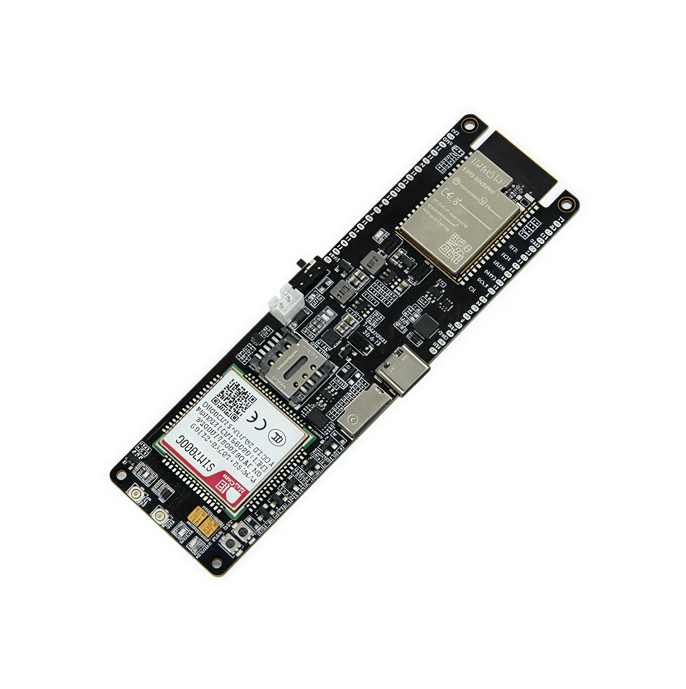
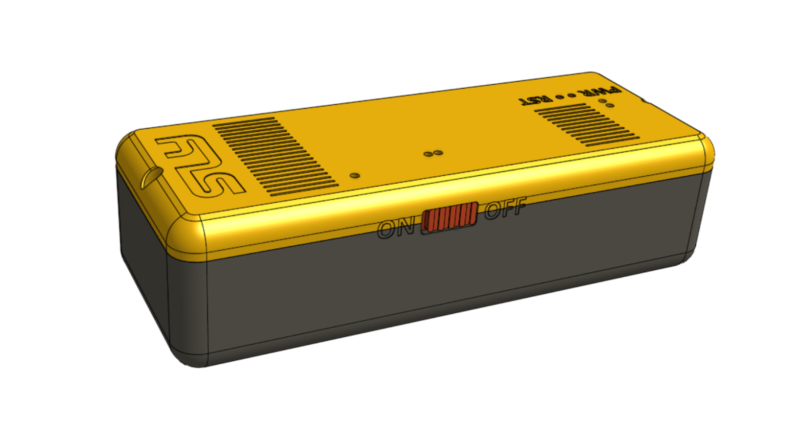
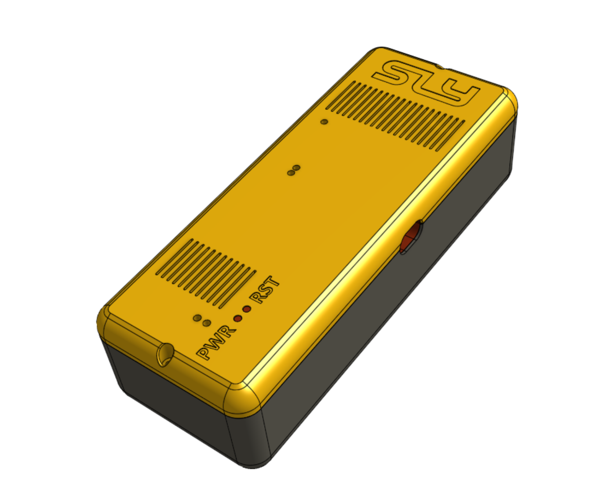
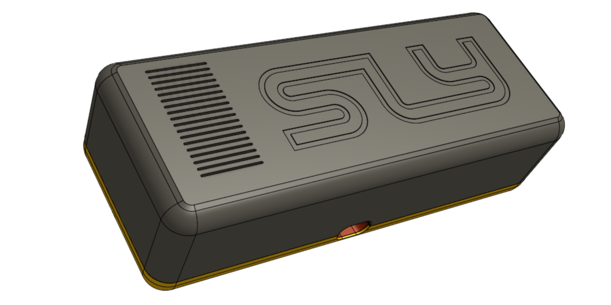
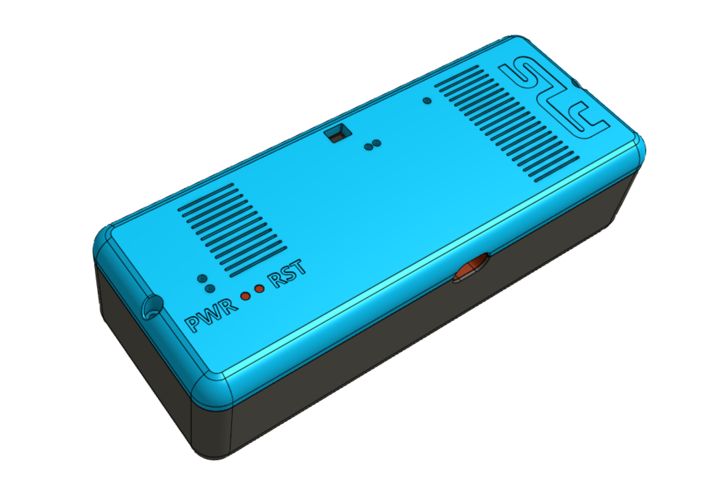
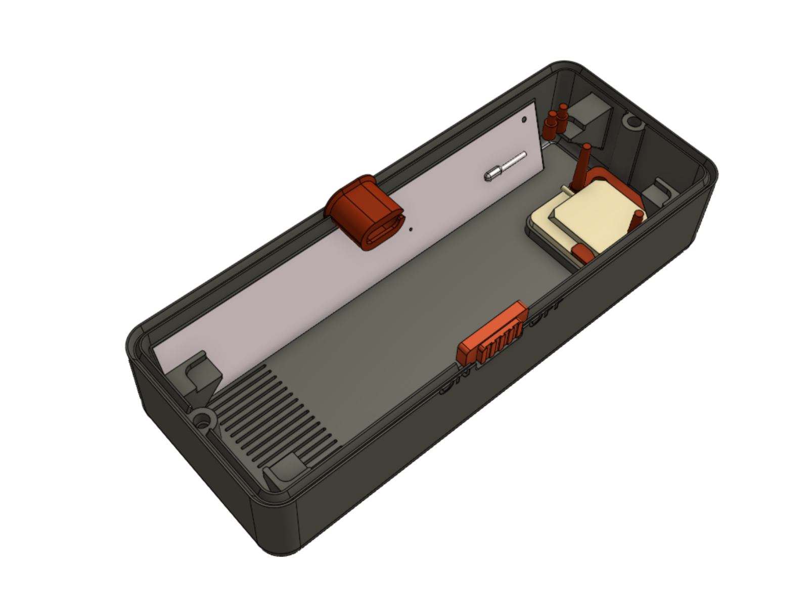
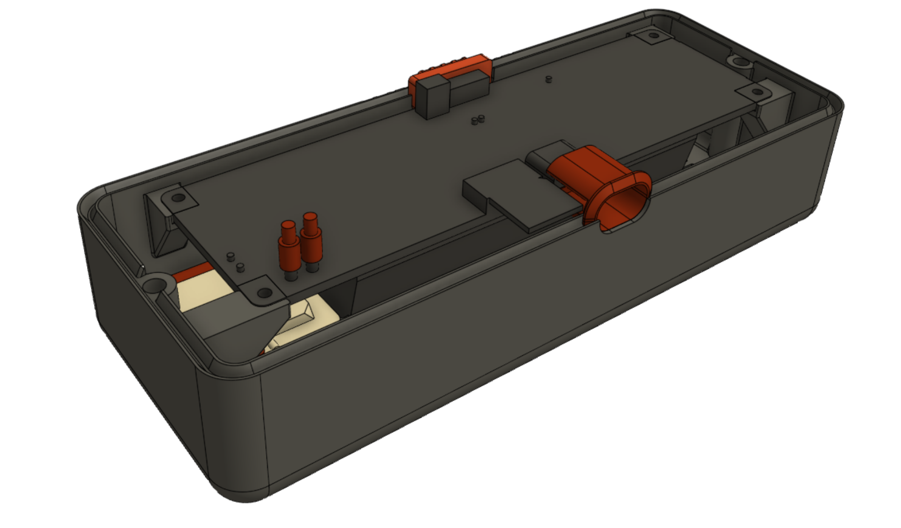
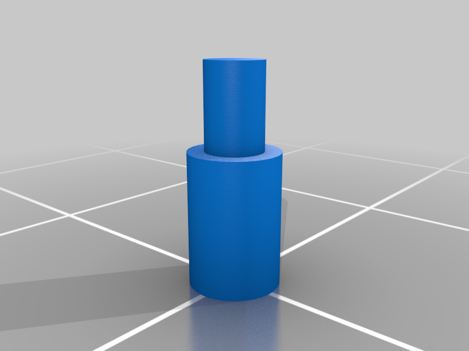

A multi-device, multi-user GPS tracking platform built around the LilyGO T-SIM7000G — a compact board combining an ESP32 microcontroller with a SIM7000G cellular/GPS modem, an SD card slot, and an 18650 battery holder. The tracker sends GPS coordinates, speed, temperature, and battery voltage to a self-hosted server over 2G/NB-IoT/CAT-M cellular.
The MotoTracker web dashboard runs on a Raspberry Pi (Apache + PHP + MySQL) and aggregates GPS feeds from multiple sources in one UI: the on-board firmware, any Traccar-tracked device (phone, ST-901L, etc.) pulled from the Home Assistant Traccar add-on, or any other client that POSTs to the HTTP ingest endpoint. Each device is owned by a user, drawn in its own colour, and replayable on an interactive Leaflet map.
Operators get a full admin panel for user and device management, and every user gets a password-less read-only embed token that can be dropped into a Home Assistant iframe Lovelace card without forcing a login. Raw GPS fixes are road-snapped and gap-filled with OSRM for clean, map-aligned tracks.
/config.json on the SD card and override the compiled defaultsk, v, la, lo, s, t, h, b, ts) to minimise cellular overheadusers.active=0 instead of being deleted, so historical data and audit trails are preservedOn the production deployment, phones and OBD trackers send their positions to the Home Assistant Traccar add-on, and a pair of background workers running on the MotoTracker host pull and road-snap those positions into the MotoTracker database — every Traccar device gets a matching MotoTracker device the first time it is seen.
raw rows using a unique (device_id, traccar_pos_id) index — re-running after a crash cannot double-insert/match to flip them to snapped, then inserts interpolated children sampled along OSRM /route between consecutive fixes — bounded by gap range, max points per gap, and a sanity ratio against straight-line distancepoints.source distinguishes raw / snapped / interpolated; UI and exports treat them uniformly, but parent_id cascades so cleaning a stretch of raw history also purges its interpolated fillHA_<traccar_id> owned by the first admin via INSERT … ON DUPLICATE KEY UPDATE id = LAST_INSERT_ID(id)
Every user owns a read_api_key that can be passed to the dashboard via
?token=… or Authorization: Bearer …. In token mode the UI hides
logout, the admin link, and the device-settings modal, and 401s do not redirect
to the login page (which would loop inside an iframe). The token survives across browser
sessions, works inside iframes that block third-party cookies, and can be revoked instantly
from the admin panel — all without touching the user's password.
Mutating endpoints (device/update.php, device/delete_points.php,
anything under admin/) bail out with 403 read_only_token. Even if
the token belongs to an admin, its scope stays bounded to that user's read endpoints.
config.h, config_local.h, types.h, protocol_*.h, wifi_config.h, …)users, devices, points (with source ENUM and parent_id), grown by SQL migrationsrequests, pymysql) for Traccar pull and OSRM snap/interpolate; both driven by systemd timersCustom enclosure designed for the LilyGO T-SIM7000G board. Available on Thingiverse.







Source code: github.com/ArturKos/MotoTracker
Back to Portfolio